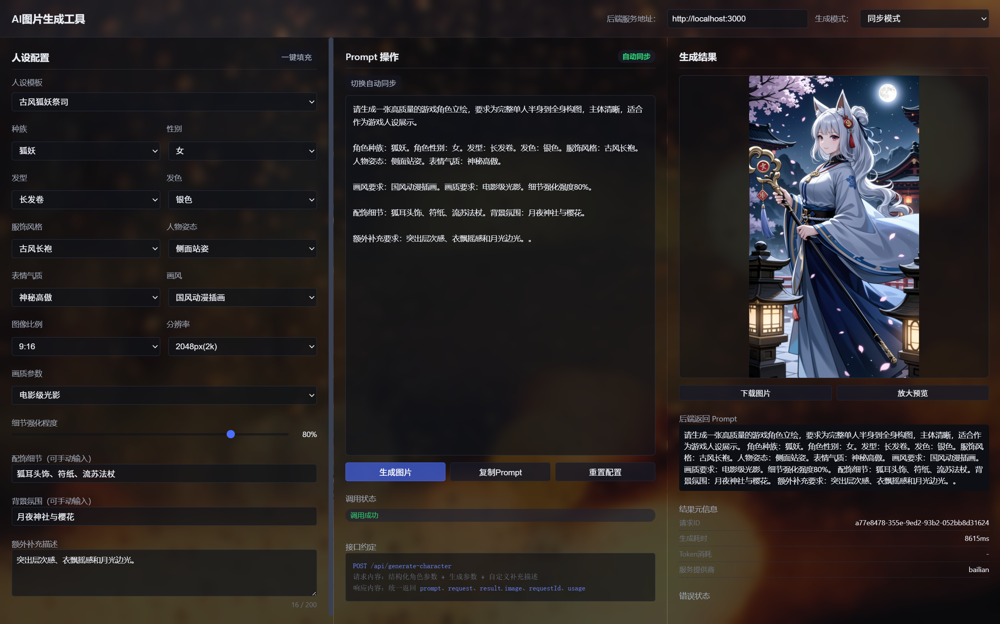
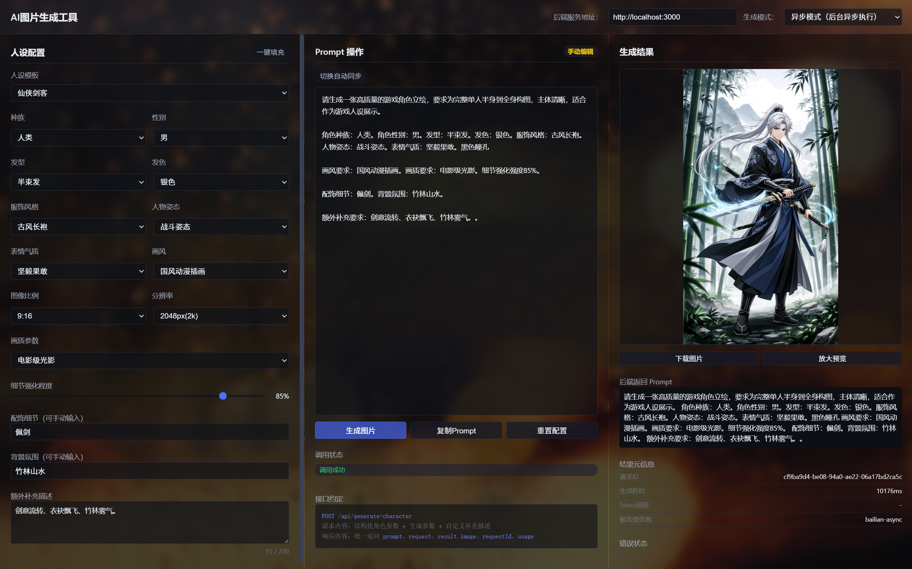
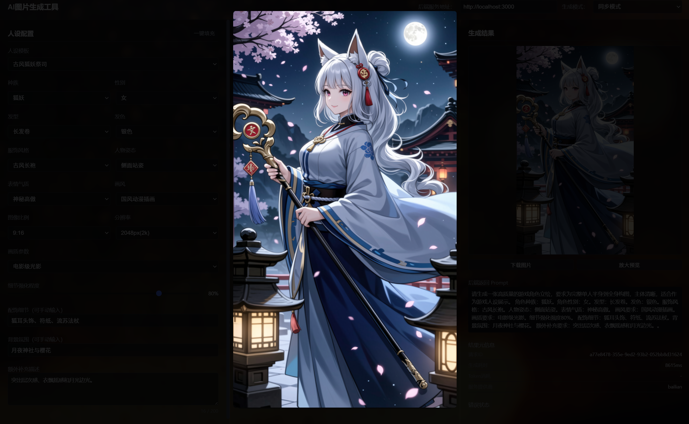
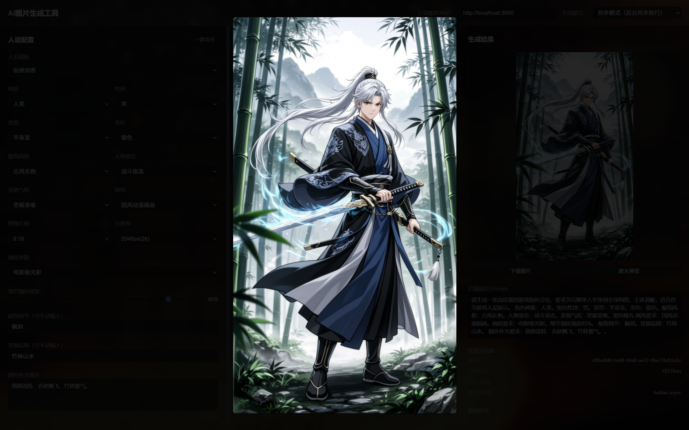

WORK / PROJECT 02

AI生图网页
AI IMAGE GENERATION WEB
一款面向游戏开发者与插画师的 AI 辅助设计工具：通过参数化配置自动生成结构化 Prompt，调用真实 AI 平台完成图片生成，支持同步与异步双模式出图。
AI IMAGE GENERATION WEB
一款面向游戏开发者与插画师的 AI 辅助设计工具：通过参数化配置自动生成结构化 Prompt，调用真实 AI 平台完成图片生成，支持同步与异步双模式出图。
市面上的 AI 生图工具大多要求用户直接编写 Prompt，门槛高、效果不稳定。我希望做一款参数优先的 AI 生图工具：用户只需选择角色人设参数（种族、发型、服饰、画风等），系统自动拼接结构化 Prompt 并调用真实 AI 平台出图，让不会写 Prompt 的人也能稳定产出。
这个项目也是我从纯前端页面走向前后端分离的真实 AI 应用的一次实践：后端代理 AI 接口、API 密钥不暴露、失败时返回真实错误信息。
核心是打通"参数化配置 → 智能Prompt生成 → AI图片生成"的完整闭环，具体拆解为：
① 15 项人设参数 + 5 套预设模板，一键填充降低使用门槛；② Prompt 自动拼接、实时预览、可手动编辑；③ 同步（阿里云百炼）与异步（Apimart）双 AI 平台分流，兼顾速度与质量；④ 结果可下载、放大预览，生成失败时透明返回真实错误而非伪造图片。
界面采用经典三栏工作流布局：左侧人设配置、中间 Prompt 操作、右侧生成结果，"配置 → 生成 → 查看"的动线一眼可见，深色主题统一视觉。

设计上坚持两条原则：参数优先——用结构化下拉与滑块替代 Prompt 编写；双模式共存——同步满足快速预览，异步满足高质量出图，切换模式时比例与分辨率字段自动联动置灰。
生成链路由四个环节构成，同步与异步两条链路并行：
选择模板或自定义 15 项人设参数
参数实时拼接为结构化 Prompt，可编辑
同步直连百炼出图 / 异步提交任务轮询
图片展示、下载、放大预览与元信息

项目按四阶段推进：第一阶段完成 PRD 与架构设计，确定前端三栏、Node.js 后端与 Python 辅助服务的三层架构；第二阶段实现前端，把逻辑拆分为 9 个独立 JS 模块（状态、配置、存储、Prompt、API、UI 等），用户配置通过 localStorage 持久化；第三阶段实现后端，将 API 调用、同步编排、异步任务管理与 Python 桥接拆为独立服务；第四阶段进行真实 AI 平台联调，把"失败降级 Mock"改造为"真实错误透传"。
开发中最大的挑战是异步模式的状态管理：我在后端维护 task_id 缓存、2 秒轮询、120 秒超时的统一任务生命周期，前端只需按状态渲染界面，解耦了轮询逻辑与 UI 状态。
前后端分离架构，核心模块如下：
后端模块职责严格分离：aiClient 只负责 API 调用，syncService / asyncService 负责业务编排，pythonBridge 在 Python 服务不可达时自动降级为 Node 本地处理；全部配置外置于 .env 环境变量，API 密钥不在前端暴露。
完成前后端完整可运行的项目：同步模式实测 10-20 秒生成真实 AI 图片（目标 P95 ≤ 60 秒），异步任务提交小于 1 秒，Prompt 自动生成小于 10 毫秒；94 个测试用例全部通过，P0 / P1 缺陷为零。


这个项目让我完整走通了一次真实 AI 应用从 0 到 1 的落地：从 PRD 撰写、前后端架构设计到双 AI 平台联调，体现了产品思维、全栈开发能力与 AI 工程化落地能力。